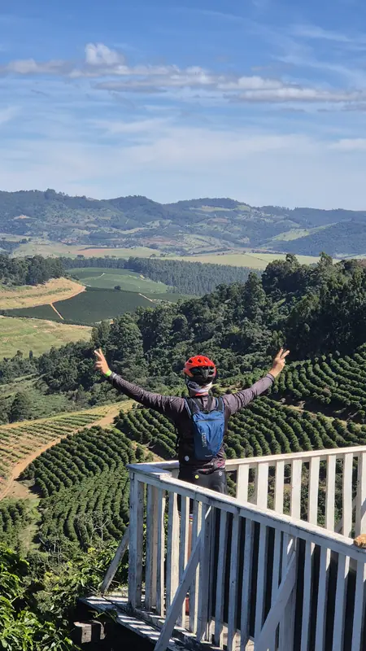
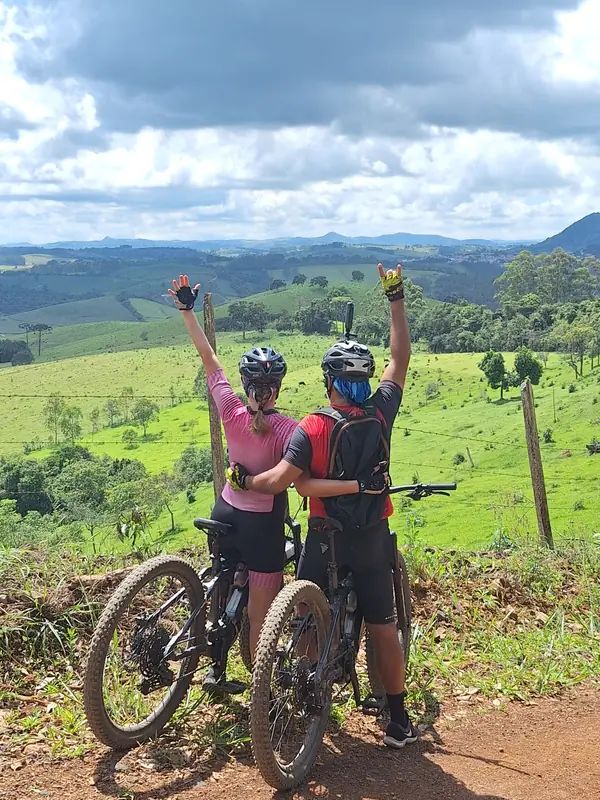
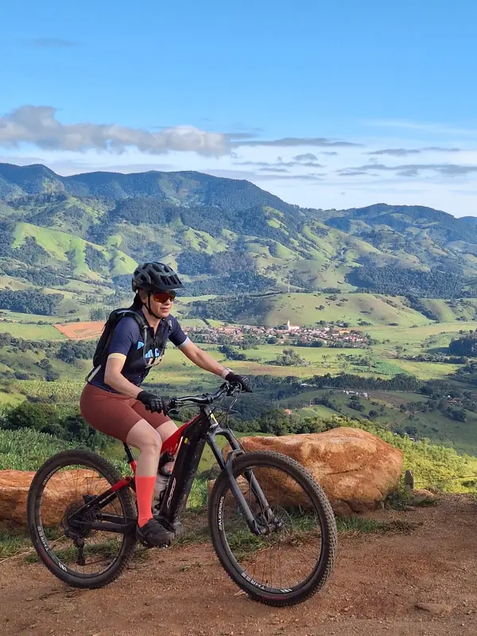
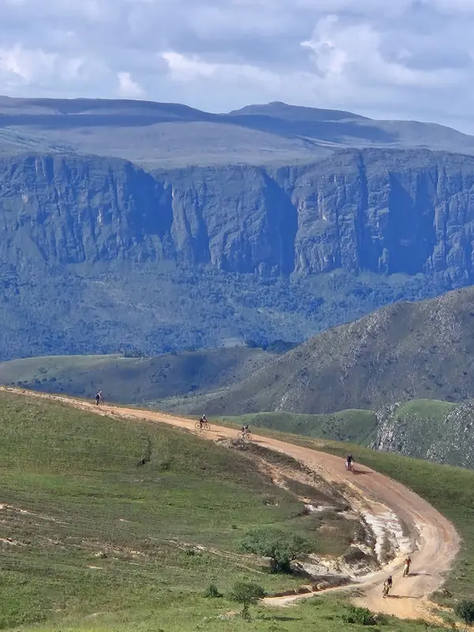
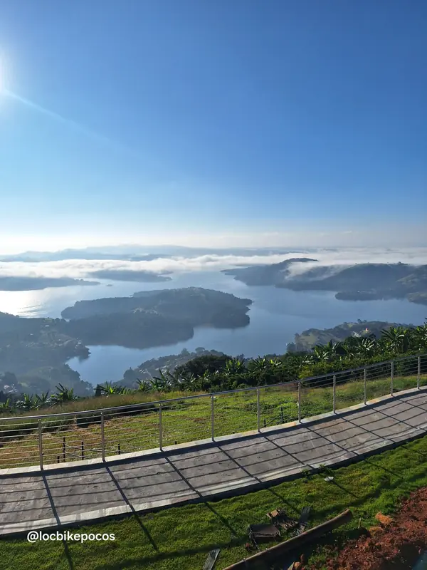

Fazenda de Café e Azeite
a partir de R$ 690
Cicloturismo em Poços de Caldas MG
Conheça e aventure-se em nossa cidade de E-Bike.
O tour mais completo de Poços de Caldas MG: um circuito de até 5 horas que cruza os pontos turísticos da nossa linda cidade. Ideal para quem quer conhecer a cidade em detalhes.
Os roteiros preferidos dos turistas, em circuitos urbanos ou MTB.
Roteiros da LocBike
Explore Poços de Caldas de um jeito diferente, pelos pontos turísticos da cidade ou pelas trilhas da região. Temos experiências únicas para todos os estilos e níveis.
Os cartões-postais de Poços de Caldas em um só pedal de E-Bike: Thermas Antônio Carlos, Palace Casino, Praça Pedro Sanches, Fonte dos Amores, Recanto Japonês e muito mais, com paradas para fotos e as histórias da cidade.
Poços de Caldas vista de outro jeito: um pedal ao anoitecer pelas praças e avenidas iluminadas do centro, com guia e paradas nos pontos turísticos. Programa diferente para fazer em família ou com os amigos.
Pedale com a gente pelas trilhas da nossa região e suas lindas paisagens: fazendas de café e azeite, vinícola, picos e mirantes.
Ver roteiros MTBRoteiros MTB
Pedaladas guiadas de E-Bike por estradas rurais e serras da região: fazendas de café e azeite, vinícola, picos e mirantes. Todos incluem E-Bike, guia, apoio mecânico básico e seguro ciclista.

a partir de R$ 690
a partir de R$ 890

a partir de R$ 890
a partir de R$ 690
a partir de R$ 890
Roteiros da LocBike
Cicloviagens pelas rotas mais bonitas da região e de Minas Gerais, com guia credenciado, E-Bikes e veículo de apoio da LocBikePocos.

A rota de peregrinação mais famosa do Brasil, pedalada pela Serra da Mantiqueira.
Próximas saídas

Chapadões, paredões de pedra e cachoeiras onde nasce o Rio São Francisco.

Um giro pelas cidades e represas que contornam a cratera do antigo vulcão.
[Introdução — alugue sua bike e pedale no seu ritmo]
Passeios da LocBike
Os mesmos roteiros pelas estradas rurais e serras da região, a bordo de um veículo 4x4: fazendas de café e azeite, vinícola, picos e mirantes, com guia e todo o conforto, sem precisar pedalar.
a partir de [Valor]
a partir de [Valor]
a partir de [Valor]
a partir de [Valor]
a partir de [Valor]
Quem somos
Com mais de 10 anos de experiência e primeira agência de cicloturismo da região de Poços de Caldas, a LocBike é uma empresa familiar especializada em cicloturismo, passeios guiados e locação de bicicletas, com sede em Poços de Caldas – MG. Nosso objetivo é proporcionar experiências inesquecíveis sobre duas rodas, seja para quem deseja explorar as belezas da nossa cidade ou encarar grandes desafios pelas montanhas da região.
Oferecemos uma frota diversificada para atender a todos os perfis de ciclistas, desde modelos urbanos, infantojuvenis e bicicletas de estrada (Road/Speed) até Mountain Bikes (MTB) e bicicletas elétricas (E-Bikes / E-MTB Full Suspension). Além das bikes, disponibilizamos equipamentos essenciais como capacetes, alforjes, carretinhas e acessórios de transporte.
Para os apaixonados pelo pedal de longa distância, prestamos suporte e estrutura completa para apoiar ciclistas no Caminho da Fé, na Serra da Canastra, na Rota do Vulcão e em outras rotas da região. Seja para um passeio em família no fim de semana ou para uma expedição de cicloturismo, a LocBike entrega qualidade, segurança e a liberdade que só a bicicleta proporciona.
Vale-presente
Não é só um passeio: é um presente cheio de memórias.
[Resposta]
[Resposta]
[Resposta]
[Resposta]
Contato
Reserve seu passeio ou tire suas dúvidas pelo WhatsApp.